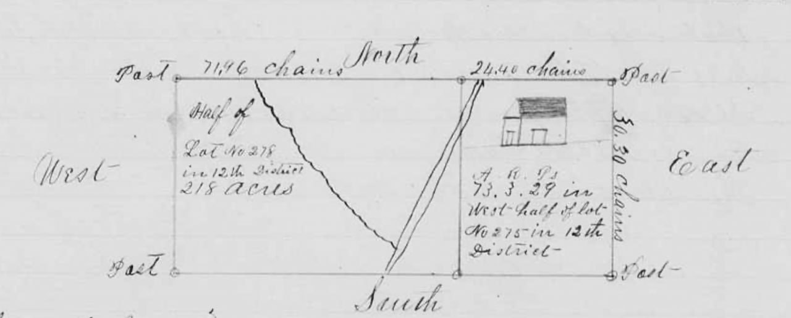

Robinson L. Hodges
Landowner before Barney’s development
Robinson L. Hodges owned the southern half of Land Lot 278 before Barney’s railway-era development. His 1872 purchase from William Synon, the 1879 homestead plat, and later commissioner deeds connect his property directly to the land developed into town lots. The surviving transactions identify particular sales, but do not yet establish how much of his acreage became part of the town.[1–6]
The homestead plat also depicts a house in western Land Lot 275, east of the road through the property. It helps distinguish the home site shown on the plat from land later sold as town lots in Land Lot 278. The drawing does not establish the house’s exact modern location.[2]

Brooks County Court of Ordinary, Homestead Records, page 25. North is at the top; the house symbol appears in the Land Lot 275 tract.
Family and life at Barney
Records use Robinson, Robertson, Robert, and R. L. Hodges. Robertson/Robinson appears in the continuing household of James C. and Sarah A. Hodges in the 1850 and 1860 censuses. Huxford explicitly identifies him as their son. The relationship to James Carr Hodges and Sarah Ann Newton is strong probable: the censuses support household continuity, although those schedules do not state relationships.[7]
His birth year remains inconsistent across sources. The 1900 census records January 1836; Huxford gives 1837. He married Mary J. Stephens on January 22, 1861.[7]
In 1900, Hodges was a 64-year-old farmer heading Barney household #8. The ten-person household included Mary; children John H., Harriett, Joseph, and E. V. Culbreth; son-in-law J. B. Culbreth; and three Culbreth grandchildren. The exact expansion of E. V.’s given name remains less certain than her recorded relationship as Hodges’s daughter.[7]
The Valdosta Times reported on December 1, 1900 that Hodges died suddenly during cane-stripping work on Tuesday, November 27. Mary remained at Barney: the 1910 census places her with daughters Maggie Cribb and Hattie, son-in-law John Cribb, and grandchildren.[7]
The R. L. Hodges household page contains the census household and additional family references.
Purchase and homestead
The Synon purchase, 1872
Deed Book O, page 33 records William Synon’s March 6, 1872 conveyance of the southern half of Land Lot 278 to Robinson L. Hodges. It establishes his holding before the later town-lot transactions.[1]
The homestead plat, 1879
The plat on page 25 of the Homestead Records shows 218 acres in half of Land Lot 278 and approximately 73.93 acres in western Land Lot 275, District 12. The latter amount appears under A/R/P headings as “73.3.29,” not as a printed decimal acreage. The Land Lot 278 portion is associated with Hodges’s southern-half holding.[2]
The diagonal road through the plat has been identified as the Road from Morven to William Folsom’s Sr.; the cropped drawing does not itself print that name. The house symbol lies east of the road, in the Land Lot 275 tract. A separate irregular line meets the road, but its meaning has not been established.[2]
The plat’s acreages conflict with the petition/order. That discrepancy remains unresolved. The nominal acreage of half a land lot should not be substituted for the plat’s stated 218 acres, nor should the existing southern-half map outline be mistaken for an exact reconstruction of the homestead survey.[2]
The Mitchell Brice mortgage, 1880
Deed Book E, pages 456–457 records a March 15, 1880 mortgage involving 75 acres at the west end of the southern half of Land Lot 278, together with crop/gin collateral, securing a $75 obligation to Mitchell Brice. It is an encumbrance, not evidence of a completed sale of the tract to Brice. Its acreage alone does not establish a rectangular footprint.[3]
From homestead property to town lots
Court-authorized sales
A later commissioner deed recites Judge Augustine H. Hansell’s December 19, 1896 order on the petition of R. L. and Mary Hodges and refers to Joel Mable’s Barney town plat. This is evidence of a court-authorized town-sale plan involving the homestead property. The full order remains to be compared with the deed’s recital.[4]
South Georgia Railway, 1897
The October 16, 1897 deed in Deed Book M, page 538 conveys business lots 1, 3, 5, 7 and 9 and residence lots 12, 14 and 16 in Barney, Land Lot 278, through a commissioner. It records $200 consideration and references the railway right-of-way, First Street, and an alley. These are specific town-lot conveyances, not proof that all Hodges land became railway property. A marginal mark and cancellation notation remain unexplained; no cancellation date or effect has been established.[4]
B. H. Legg, 1898
Deed Book N, pages 107–108 conveys the Legg tract from the Hodges homestead estate on October 1, 1898. Its description begins on the east side of the railway right-of-way at Ninth Street, then runs east 210 feet, north 200 feet, west 210 feet, and south to the beginning. The deed calls it one acre; that acreage and the dimensions are retained without treating them as an exact mathematical match.[5]
J. J. Hodges, 1899
Deed Book N, page 301 conveys Barney town lots 2, 3 and 4 in Land Lot 278 on June 14, 1899. The adjoining owners are B. H. Legg on the west, R. L. Hodges on the north and east, and Sallie Davis on the south. These calls place retained Hodges land alongside the conveyed town parcels.[6]
His place in the town’s history
Hodges was one of the landowners whose holdings preceded, and supplied parcels for, early Barney. The record supports development on land from the Hodges homestead. It does not establish that he personally surveyed the town, sold every lot directly, or was its sole founder. Mary’s involvement in the petition and the commissioner’s role in the sales are part of that history.[1–6]
“Estate” in the homestead proceedings does not by itself mean that Hodges was already dead. The town-lot transactions described here precede his reported death in November 1900.[4–7]
The complete homestead petition and order, the December 1896 order, and Joel Mable’s town plat remain important for resolving the acreage differences and accounting for the property’s division. A parcel-by-parcel accounting is needed before assigning a total acreage to Hodges’s contribution to the developing town.
Sources
- Brooks County, Deed Book O, page 33, William Synon to Robinson L. Hodges, March 6, 1872.
- Brooks County Court of Ordinary, Homestead Records, page 25, R. L. Hodges homestead plat, 1879. Plat acreages conflict with the petition/order; the road identification is contextual, not a label printed on the cropped plat.
- Brooks County, Deed Book E, pages 456–457, R. L. Hodges mortgage to Mitchell Brice, March 15, 1880.
- Brooks County, Deed Book M, page 538, commissioner conveyance to South Georgia Railway Company, October 16, 1897; recites the December 19, 1896 order and Joel Mable town plat.
- Brooks County, Deed Book N, pages 107–108, commissioner conveyance to B. H. Legg, October 1, 1898.
- Brooks County, Deed Book N, page 301, commissioner conveyance to J. J. Hodges, June 14, 1899.
- Folks Huxford, History of Brooks County, Georgia, pages 484–485; Brooks County marriage record, Robinson Hodges and Mary J. Stephens, January 22, 1861; 1850, 1860, 1870, 1880, 1900, and 1910 census household evidence; The Valdosta Times, December 1, 1900, “Two Old Citizens Are Dead.” See the household page and source list. Parentage remains strong probable, and the birth-year conflict is retained.